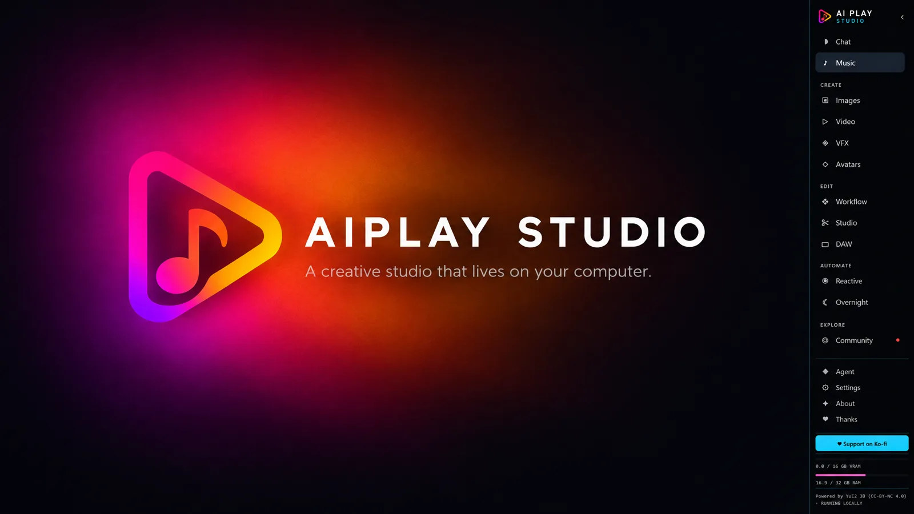
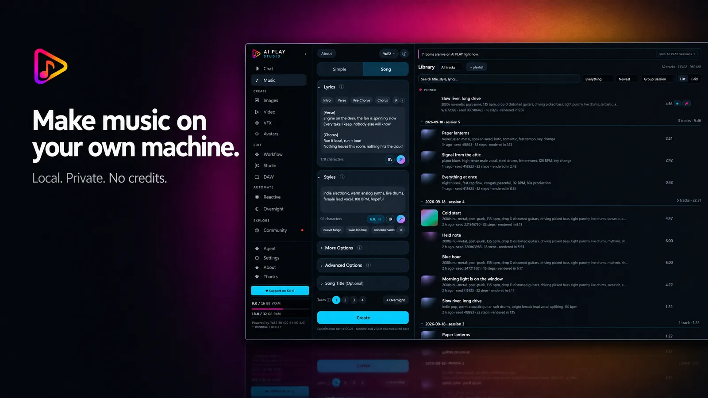
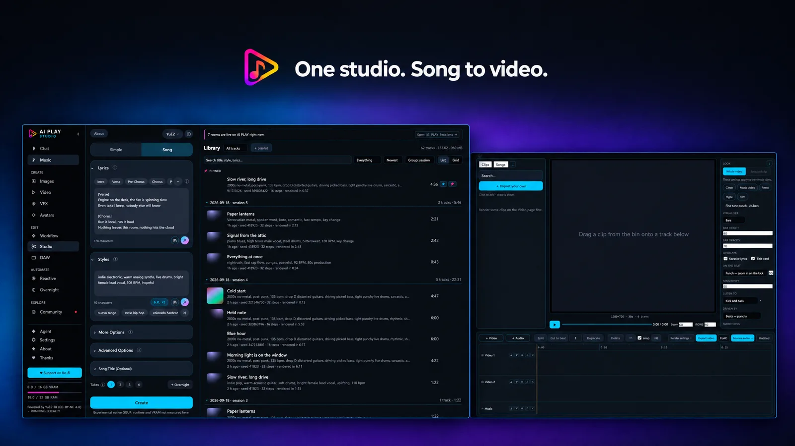
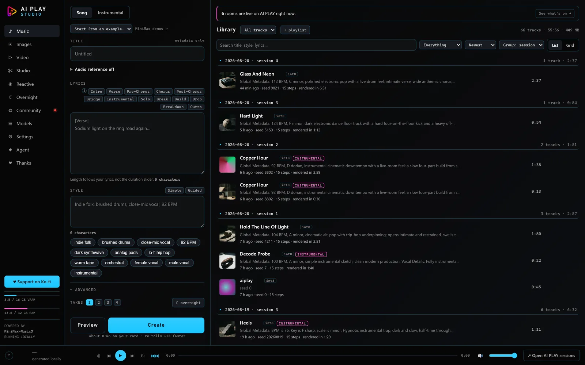
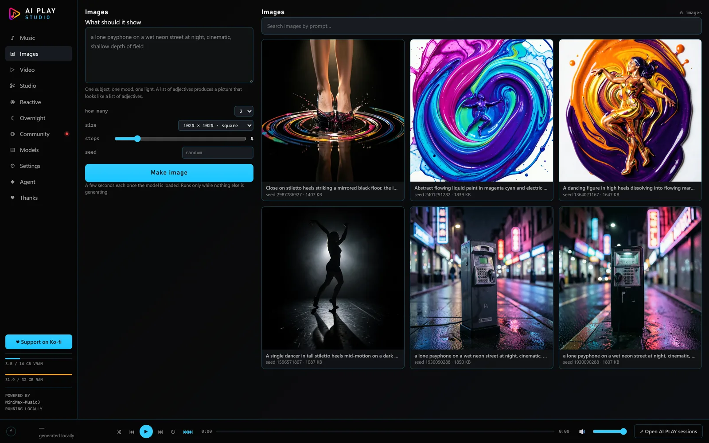
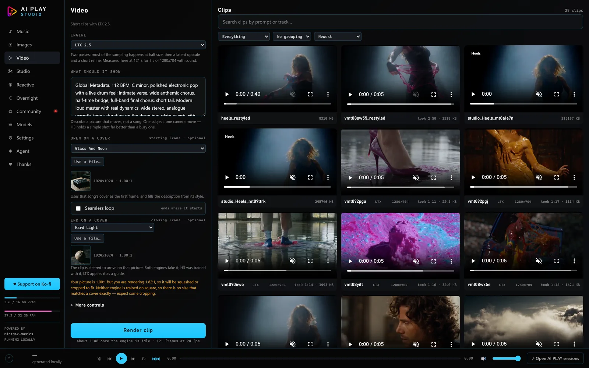
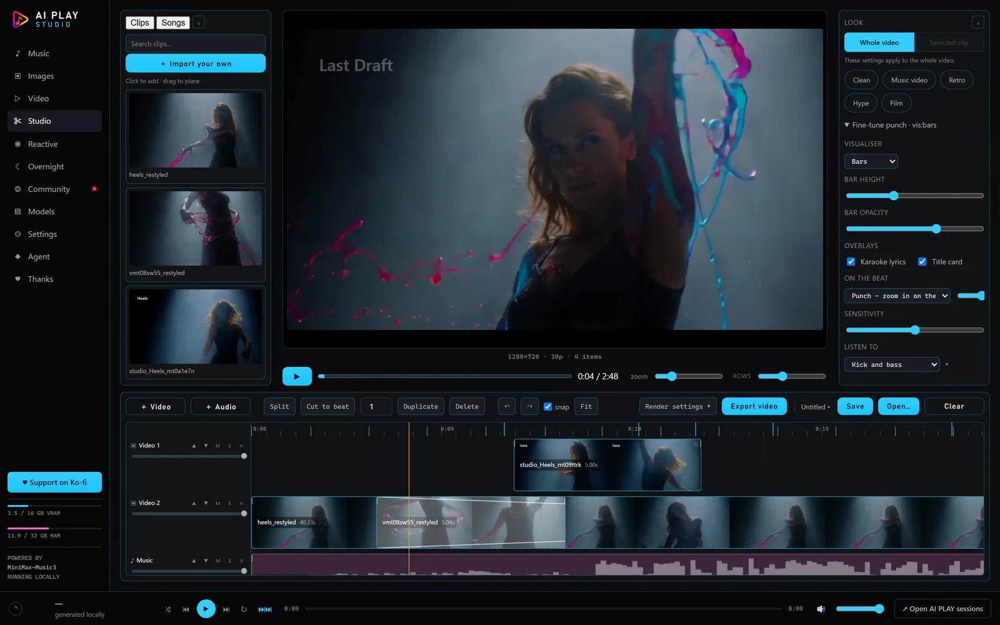
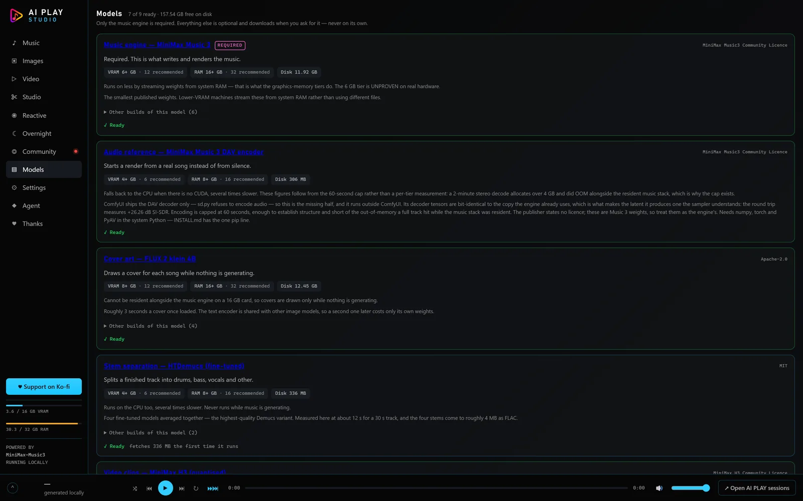
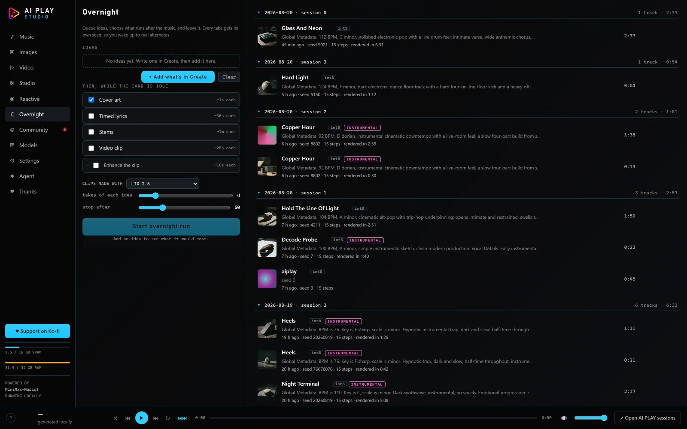

A song, words and all
“Glass and Neon” — 2:37, written and sung on a home GPU from one paragraph of direction.
Generate the track, shape its score, mix it in the DAW and bring it to the screen. Music, covers, vectors, video, VFX and 3D in one free, open-source studio. Work by hand or let your own MCP assistant use the same project tools.
Start with Music only for native YuE2, without ComfyUI or Python. Choose Full Studio for the wider suite. Local generation needs no Studio account or credits; optional hosted services use your own key and may charge.

Compare performances, reshape a musical passage and give the important moment a visual accent. Each workflow has a UI, a saved receipt and typed MCP controls.
Edit a melody in the DAW, review its YuE2 score and try two or three alternatives for selected bars. Keep the rest of the recording with 80 ms blends at the seams, and compare before keeping. Compatible saved Python YuE2 songs only; this is background generation, not instant audio inpainting.
DAW score and AI-take workflowGroup 2, 4 or 8 saved songs. Switch A–H at the same playback position with loudness matched for listening, then save your choice, favourite and receipts. Different seeds are queued for generation separately.
Take comparisonPlace a Drop cue at a bar and beat. Preview a dry impact or 909 kick with a flash, then apply editable objects to the DAW and VFX composition. Check the explicit time offset; Undo removes the unchanged cue objects.
Shared cues
Q4_0 is the smaller default: about 2.93 GB of model files. Q8_0 is higher precision: about 4.53 GB. Both share an F16 VAE and four sidecars. Runtime downloads are separate: about 833 MB for NVIDIA, 58 MB for Vulkan or 24 MB for CPU. Install explicitly in Models; source and integrity checks travel with the manifest.
One short-song test on an RTX 4070 Ti SUPER with 16 GB VRAM, CoT full and 32 synthesis steps. This is one measured run, not a promised speed or long-song quality comparison.
CoT full, melody or off; 32 synthesis steps by default, with 16 experimental. Import ABC notation and plan bars, BPM and nominal length in Music or through MCP. Planning uses no GPU; changing a score generates a new take, not seamless extension. Choose installed Q4/Q8 weights per take in Music or through MCP; no silent substitution. Nonempty lyrics required; reference audio and instrumental support depend on the route. See the guide for this native engine's current limits.
Sampled whole-GPU peak: 6,589 MiB, baseline 3,129 MiB. Other applications are included: this is not a process-memory peak or certification for 6 GB or 8 GB cards. YuE2 weights use CC BY-NC 4.0. Studio's output label follows the authors' statement that individuals may sell output and companies need a commercial licence; review the linked licence details before publishing. Q8 has not yet been GPU-benchmarked or listening-tested in Studio; higher precision is not a guaranteed quality upgrade. Read the benchmark and licence limits.
The song, the words, the singing, every frame, the cover — all of it generated on a single consumer graphics card, in this program. No cloud service was called, no credits were spent, and nothing was uploaded.
“Glass and Neon” — 2:37, written and sung on a home GPU from one paragraph of direction.
Five seconds at 1280×704, from a sentence.
An audio reference re-rendered at three denoise settings — the dial that decides how much of the original survives.
YuE2 plans a lead sheet — two voices and the chords, in plain ABC — before it sings a note. Studio keeps that sheet where you can read it, change a chord or the tempo, render again, and print it as sheet music. Twelve songs from it, each rendered on the same 16 GB card as the older full-suite examples on this page. These are not native GGUF benchmarks; editable score export belongs to the Python integration.
The same card stopped at 2:48 the day before. The reason turned out to be one default in the model's own code — the synthesis prefill's attention ran over the whole song in a single block, so its memory grew with the square of the length — and Studio now passes a 512-token block instead. These seven rendered on that card the same night, from Create, with their sheet music beside them. The first one is the song that ran out of memory at 3:14 the hour before.
The full suite goes beyond native music-only. These additional tools may need ComfyUI, Python and their own model downloads.

Generate from lyrics and a style, keep the track in your library and create its cover. Choose the engine per song; references, instrumentals and continuation depend on the selected route.
MiniMax Music 3 · YuE2 3B · ACE-Step 1.5, with LoRAs and coversRead and edit saved YuE2 ABC, print a lead sheet or move melody notes into the DAW. Expand the main player and choose Score for note highlighting and Follow scrolling, with timing adjustments for notation that drifts from the recording.
Saved ABC · following player · MIDI · DAWGenerate cover art, edit layers, masks, selections and text, or turn a raster into SVG. Review detail crops and clean selected geometry through the same UI and MCP workflow.
Vector workflow · Qwen · FLUX · other installed enginesGenerate clips from text or pictures, then use supported continuation and control routes to develop the shot. Pick the engine and render settings for your machine.
MiniMax H3 · LTX 2.5 · WAN VACEPlan scenes, cast characters with reference sheets, storyboard, keep alternative takes and assemble to a timeline. Start a music video from a song, or carry a shared bible and chosen references between episode projects.
The Production screen · video and audiobook projectsCollect different song ideas from Music, retain each one's lyrics, style and engine settings, and choose how many takes to make. Start now or schedule later while Studio runs and the computer stays awake.
Multiple ideas · separate seeds · one song at a timePiano roll, tempo and meter maps, instruments, recording, insert racks, sends and returns. Finish with EQ, dynamics and stereo tools, then inspect loudness, true peak and delivery checks.
Builtin synthesis · optional instruments · CPU renderingBuild compositions with layers, keyframes, effects, masks, mattes and nested comps. Preview the result and keep editing by hand or through MCP.
The VFX screenUse analysed music timing to drive cuts, pulses and transitions. Compositor-only styles need no video model; motion and frame-repainting styles use their own optional models.
Reactive video · editable VFX compositionsExchange sealed project files and reviewed scene-render requests with trusted friends. Returned takes enter quarantine before you adopt them. The file-based lending path is built; a two-PC end-to-end trial remains to be done.
Collab and reviewed handoffsFind live listening rooms and upcoming events, or borrow a style pack for your next song. Community stays at the top of the sidebar, with a live-session indicator from the public feed.
Public sessions · events · reusable stylesBlock a shot in Blender, then use its preview as control footage for the supported VACE route. Control quality depends on the scene and model.
Blender previz → WAN VACEBuild a mesh from a picture and preview 3D avatars. Mesh generation needs its own models and hardware; the optional rigging runtime currently cannot run on Windows.
TripoSG · avatar preview · optional UniRigUse Simple mode, Chat and Enhance to develop lyrics, style and creative requests. Choose a local writing model or connect an API assistant in Settings.
Optional local model or your own provider keyConnect an MCP-capable assistant to the same project workflows. Inspect readiness, create assets, edit scores and scenes, compare receipts and apply reviewed changes. UI playback, OS dialogs and some trust decisions remain human controls.
MCP workflow map · configuration in Studio's Agent screenUse optional native planning and saved-stage replay, prepare a training dataset, train adapters, transcribe audio to MIDI and preview processing. These advanced tools have separate runtime requirements; the current planner/trainer needs NVIDIA CUDA.
Native workbenchLocal generation and editing run on your computer with no Studio account or per-render credits. Optional hosted engines and API assistants send their required inputs to the provider you choose. Paid services use your own key.
Studio ships no model weights. Models shows download sizes, hardware requirements, licences and known territorial restrictions before installation. Apache-2.0 covers Studio's code; model and output rights depend on the selected model.
Read saved prompts, seeds, settings and provenance where recorded. Compare alternatives, preview edits and keep the version you choose. Older recordings may have incomplete receipts; matching a seed alone does not guarantee identical audio.






For native music, start with Node.js 20+ and Studio. No ComfyUI setup, Python environment or unrelated model download.
On Windows: download AIPLAY Studio Setup.exe and run it. It installs Studio, plus a private Node.js 20+ when this PC has none, with no admin prompt. Windows may say “Windows protected your PC” because the installer is not signed yet: click More info, then Run anyway.
Same public GitHub, two local launch modes. YuE2 music-only is part of AIPLAY Studio, not a separate repository. You download the app, then only the models you choose.
When Setup asks which build, choose Senzu's.
Native YuE2 GGUF songs on NVIDIA, AMD, Intel or CPU. No ComfyUI, Python or unrelated models. Start small; speed depends on your hardware.
The wider music, DAW, image, vector, video, VFX and 3D suite. Uses ComfyUI and Python for applicable tools. The launcher can find an existing ComfyUI or install a private one; optional packs have separate requirements.
Full Studio can use hosted MiniMax music with your fal.ai key. The separate Use Comfy API launch mode offers hosted pictures, clips, sound and 3D with your Comfy key; it has no Music or Production screen. Inputs go to the provider, and its usage charges apply.
Source code (for developers):
git clone https://github.com/Senzube4n/AIPLAY-Studio.git cd AIPLAY-Studio npm ci --omit=dev npm run start:music
Or download and extract the source ZIP (for developers; it needs Node.js installed by hand). Either way, start AIPLAY Studio.exe and choose Music only. In Models, explicitly install YuE2 GGUF Q4 or Q8 and its native runtime, then enter a style and lyrics in Music and press Create. The installer shows the download total and notices; unavailable or unverified packages must not appear ready.
| Native music prerequisite | What is known |
|---|---|
| OS / GPU | Windows x64. Setup selects CUDA for NVIDIA, Vulkan for AMD/Intel, or CPU. A 16 GB RTX 4070 Ti SUPER was timed; native Vulkan/CPU performance and a minimum are not certified. |
| System components | Current graphics drivers. NVIDIA needs CUDA 13.3 compatibility and the Microsoft Visual C++ v14 x64 Redistributable. Vulkan/CPU packages carry their runtime DLLs. |
| Application | Node.js 20+ and Studio. No ComfyUI, Python or PyTorch for native music-only. |
| Disk | About 2.93 GB for Q4 or 4.53 GB for Q8 model files. Runtime: about 833 MB for NVIDIA, 58 MB for Vulkan or 24 MB for CPU. Allow room for extraction and output files. |
Nothing is bundled and nothing downloads on its own. Every row below is generated from the catalogue the app itself reads, so the licence and the size on this page are the licence and the size the Models screen will show you. Choose one music engine; the full-suite capabilities below are not prerequisites for native music-only.
| Capability | Download | Licence |
|---|---|---|
| Music engine — MiniMax Music 3 | 11.9 GB | MiniMax Music3 Community |
| Music engine — YuE2 GGUF Q4 / optional Q8 (experimental) | ~2.9 GB | CC BY-NC 4.0 (weights) · Apache-2.0/MIT (native code) · NVIDIA CUDA runtime terms on NVIDIA only · ⚠ sellable by individuals |
| Cover — SheetSage2 song-to-score (ComfyUI) | 1.4 GB | CC BY-NC 4.0 (weights) · ⚠ not for sale |
| Video clips — TaoMate 3-step LoRA (H3) | 2.5 GB | MiniMax H3 Community Licence (derived from H3) · ⚠ excludes European Union, United Kingdom, Republic of Korea, United States of America |
| Video clips — video-to-video control (H3 Fun ControlNet) | 2.3 GB | MiniMax H3 Community Licence (a patch on H3's weights) · ⚠ excludes European Union, United Kingdom, Republic of Korea, United States of America |
| Video clips — Fast setting for H3 (TaoMate 3-step, 182 MB) | 182 MB | MiniMax H3 Community Licence (derived from H3) · ⚠ excludes European Union, United Kingdom, Republic of Korea, United States of America |
| Video clips — 4-step speed-up for H3 (1.96 GB) | 2.0 GB | MiniMax H3 Community Licence (derived from H3) · ⚠ excludes European Union, United Kingdom, Republic of Korea, United States of America |
| Video clips — 8-step speed-up for H3 (1.96 GB) | 2.0 GB | MiniMax H3 Community Licence (derived from H3) · ⚠ excludes European Union, United Kingdom, Republic of Korea, United States of America |
| H3 conditioning bridge — BUNNY (action logic) | 22.0 MB | MiniMax H3 Community Licence (derived from H3) · ⚠ excludes European Union, United Kingdom, Republic of Korea, United States of America |
| H3 conditioning bridge — Semantic Bridge v1 | 11.0 MB | MiniMax H3 Community Licence (derived from H3) · ⚠ excludes European Union, United Kingdom, Republic of Korea, United States of America |
| Music engine — YuE2 3B for ComfyUI (int8) | 4.0 GB | CC BY-NC 4.0 (weights) · ⚠ sellable by individuals |
| YuE2 instrumental planner LoRA (ComfyUI) | 213 MB | CC BY-NC 4.0 (weights, derived from YuE2-3B) · ⚠ not for sale |
| YuE2 real-audio NAR LoRA (ComfyUI) | 108 MB | CC BY-NC 4.0 (weights, derived from YuE2-3B) · ⚠ not for sale |
| YuE2 real-audio tokenizer (head + MERT-v2-FullSong) | 2.7 GB | CC BY-NC 4.0 (head from YuE2-3B; MERT-v2-FullSong) · ⚠ not for sale |
| Music engine — ACE-Step 1.5 turbo (ComfyUI) | 14.7 GB | MIT (ACE-Step's LICENSE; the ComfyUI repack's card tags apache-2.0 with no licence text) |
| Music engine — YuE2 3B | 7.8 GB | CC BY-NC 4.0 (weights) · ⚠ sellable by individuals |
| Audio reference — MiniMax Music 3 DAV encoder | 306 MB | MiniMax Music3 Community · + a pip package |
| Cover art — FLUX.2 klein 4B | 12.5 GB | Apache-2.0 |
| Fast covers: Supra2-IMG | 1.7 GB | Apache-2.0 |
| Chat — Qwen3 4B | 8.0 GB | Apache-2.0 |
| Stem separation — HTDemucs (fine-tuned) | ~336 MB | MIT · pip, not a download |
| Video clips — MiniMax H3 (quantised) | 41.0 GB | MiniMax H3 Community · ⚠ excludes European Union, United Kingdom, Republic of Korea, United States of America |
| Video clips — FastH3 (8 steps, experimental) | 42.1 GB | MiniMax H3 Community Licence (derived from H3) · ⚠ excludes European Union, United Kingdom, Republic of Korea, United States of America |
| Video references — MiniMax H3 ref2va | 22.9 GB | MiniMax H3 Community · ⚠ excludes European Union, United Kingdom, Republic of Korea, United States of America |
| Background removal — BiRefNet | 444 MB | MIT |
| Images — Ideogram 4 (open 9B) | 25.2 GB | Ideogram Non-Commercial Model Agreement · ⚠ terms unread |
| Narration — TTS voices (Kokoro + Qwen3-TTS) | ~15.5 GB | Apache-2.0 (both engines) · pip, not a download |
| Sound effects — Stable Audio 3 Small SFX | 3.5 GB | Stability AI Community License |
| Images — Z-Image Turbo (Apache-2.0) | 14.6 GB | Apache-2.0 |
| Images — Qwen Image 2.1 (research licence) | 17.3 GB | Qwen Research License Agreement · ⚠ not for sale |
| Images — Fast draft for Qwen Image 2.1 (Viggle turbo LoRA) | 680 MB | Qwen Research License Agreement · ⚠ not for sale |
| Images — Krea 2 Turbo (community licence) | 19.0 GB | Krea 2 Community License Agreement |
| Images — Z-Image base (Apache-2.0) | 14.6 GB | Apache-2.0 |
| Images — Anima (non-commercial model, sellable pictures) | 1.4 GB | CircleStone Labs Non-Commercial v1.2 |
| Video clips — LTX 2.5 (quantised) | 39.7 GB | LTX-2.x Community · ⚠ gated repo |
| Structural control — WAN 2.1 VACE 1.3B | 11.3 GB | Apache-2.0 |
| Pose extraction — DWPose (TorchScript) | 353 MB | Split: Apache-2.0 + terms unread · ⚠ terms unread |
| Depth extraction — Depth Anything V2 Small | 99.2 MB | Apache-2.0 |
| Depth extraction — Depth Anything V2 Large (non-commercial) | 1.3 GB | CC-BY-NC-4.0 · ⚠ not for sale |
| Motion module — AnimateDiff v3 (SD1.5) | 1.8 GB | Apache-2.0 |
| Source on the hits — SparseCtrl RGB (AnimateDiff v3) | 2.0 GB | Apache-2.0 |
| SD1.5 checkpoint — DreamShaper 8 (the Motion look's painter) | 2.1 GB | CreativeML Open RAIL-M |
| ControlNet v1.1 — depth and line art (SD1.5, fp16) | 1.4 GB | OpenRAIL |
| Picture references — IP-Adapter Plus (SD1.5) | 98.2 MB | Apache-2.0 |
| CLIP vision tower — ViT-H/14 (LAION-2B) | 2.5 GB | MIT |
| 3D mesh from a picture — TripoSG 1.5B | 7.9 GB | MIT |
| Skeleton and skin for a mesh — UniRig | 5.8 GB | MIT |
| Whisper: transcription and timed lyrics | ~3.1 GB | MIT · pip, not a download |
| Smooth motion — RIFE 4.26 | 22.7 MB | MIT |
| Upscale — Real-ESRGAN 2x | 67.1 MB | BSD-3-Clause |
| MiniMax H3 fl2va W6A8 (experimental) | 16.0 GB | MiniMax H3 Community · ⚠ excludes European Union, United Kingdom, Republic of Korea, United States of America |
| MiniMax H3 ref2va W6A8 (experimental) | 16.0 GB | MiniMax H3 Community · ⚠ excludes European Union, United Kingdom, Republic of Korea, United States of America |
| YuE2 style LoRA — TRBDR Broadside | 118 MB | CC BY-NC 4.0 (adapter weights) · ⚠ not for sale |
| YuE2 style LoRA — TRBDR Lantern | 118 MB | CC BY-NC 4.0 (adapter weights) · ⚠ not for sale |
| YuE2 style LoRA — TRBDR Hearth | 118 MB | CC BY-NC 4.0 (adapter weights) · ⚠ not for sale |
| YuE2 style LoRA — TRBDR Ferryman | 177 MB | CC BY-NC 4.0 (adapter weights) · ⚠ not for sale |
| YuE2 style LoRA — TRBDR Porch | 177 MB | CC BY-NC 4.0 (adapter weights) · ⚠ not for sale |
| YuE2 style LoRA — GRVL Ember | 118 MB | CC BY-NC 4.0 (adapter weights) · ⚠ not for sale |
| YuE2 style LoRA — GRVL Smoulder | 118 MB | CC BY-NC 4.0 (adapter weights) · ⚠ not for sale |
| YuE2 style LoRA — GRVL Cinder | 118 MB | CC BY-NC 4.0 (adapter weights) · ⚠ not for sale |
| YuE2 style LoRA — GRVL Wildfire | 118 MB | CC BY-NC 4.0 (adapter weights) · ⚠ not for sale |
| YuE2 style LoRA — GRVL Thunder | 118 MB | CC BY-NC 4.0 (adapter weights) · ⚠ not for sale |
| YuE2 style LoRA — GRVL Tempest | 118 MB | CC BY-NC 4.0 (adapter weights) · ⚠ not for sale |
| GPU / RAM | Requirements vary by model, build, resolution and route. Review the selected model's card and memory requirements in Models before installation. |
| Disk | 2.5 GB (TaoMate 3-step LoRA) or 2.3 GB (video-to-video control) or 182 MB (Fast setting for H3) or 2.0 GB (4-step speed-up for H3) or 2.0 GB (8-step speed-up for H3) or 41.0 GB (MiniMax H3) or 42.1 GB (FastH3) or 39.7 GB (LTX 2.5) |